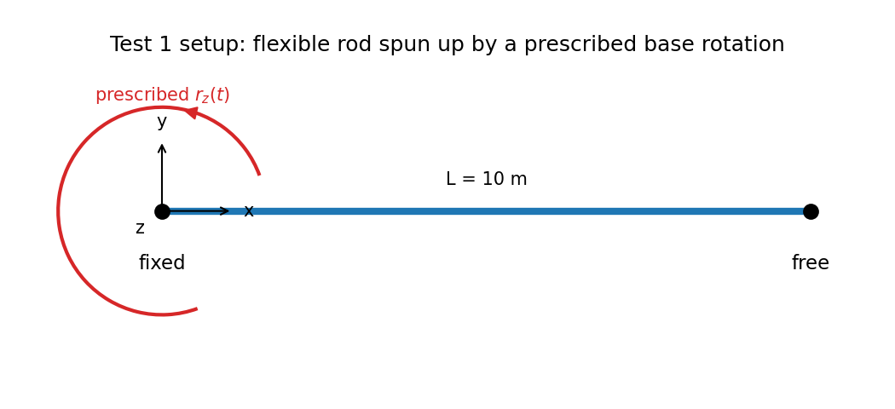
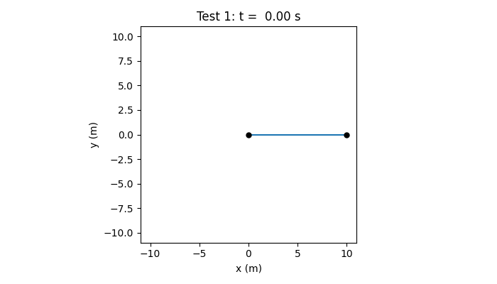
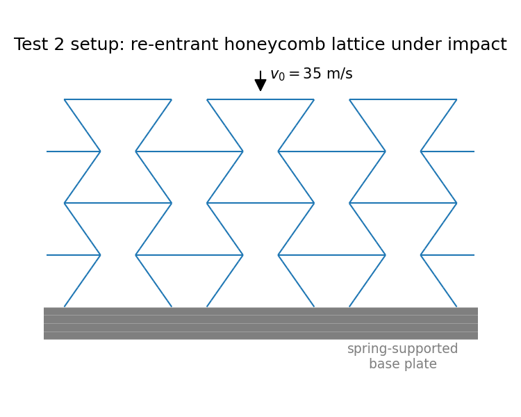
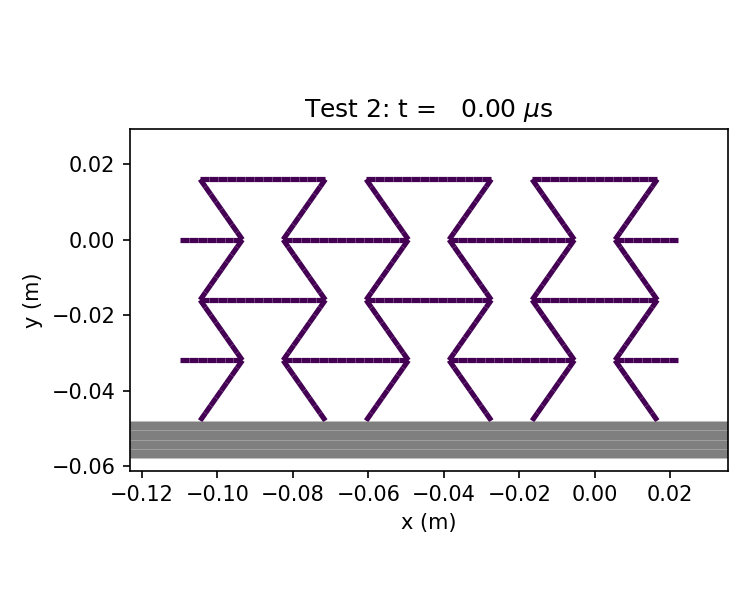

|
dynLattice
|
As an example use-case, the transient Test 1 is laid out and explained.
Test 1 reproduces Example 5.1 from Simo, Vu-Quoc (1988): a straight, initially unstressed flexible rod, clamped at one end to a rigid hub, is spun up by a prescribed base rotation. The rod is free at its other end. This serves as a first tutorial case: it involves only a single rod with a minimal (elastic) model, yet it already exercises the full dynamic solver, the rod's geometrically-exact (Cosserat) kinematics, and different boundary-conditions. The rod itself is 10m long, unloaded otherwise and starts out perfectly straight, as shown below.

The fixed end is only fixed in translation and has a rotation about the out-of-plane axis (rz) prescribed to follow \(\psi(t) = 6/15 \cdot (1-\cos(2\pi t/15))\) for \(t<15\)s and held constant afterwards (see model.model.disp.scaleFunc in the detailed explanation) — a single sinusoidal half-wave ramp up to a constant angular velocity. Physically, this drives a spin-up phase (0s-15s) in which the rod elongates under the growing centrifugal load, followed by a free-flutter phase (15s-30s) in which the tip continues to oscillate once the prescribed rotation has plateaued. The results obtained with the current implementation agree well with the reference solution from literature; see Transient Benchmarks for the quantitative comparison.
The settings below produce a series of ParaView (.vtu/.pvd) files that can be opened directly in ParaView, or rendered into a video like the one below:

As a first step, we need to compile the program using jive make. This will create the executable bin/dynLattice we can use to run the simulation.
The next step is to create the needed files, starting with the geometry file, in this case tests/transient/test1.geo. The GMSH syntax can be found on their documentation.
Now, we need to create our property file with model inputs. For our case, it can be found in tests/transient/test1.pro and will be explained line-by-line in the following. Note that the file contains include statements for three other input files: input.pro, model.pro and output.pro. Some of the contents of these included files are overwritten in test1.pro after the include statements. A detailed overview over the properties and their effects can be found in Properties for Example 1
As a second, more involved example, tests/docs/test2.pro is laid out, adapted from Gärtner et al. (2025).
Test 2 is adapted from the impact experiments in Gärtner et al. (2025), which studies whether re-entrant (auxetic) honeycomb geometries actually help mitigate transmitted impact loads compared to conventional lattices. The lattice itself is a re-entrant honeycomb unit cell tiled 6×4 times, made of slender elasto-plastic steel rods, and repeats periodically in the horizontal direction so that it behaves as an effectively infinite strip in that direction, as shown below.

The top edge represents a rigid impactor: it carries an attached mass and is given an initial downward velocity of \(v_0=70\) m/s, so it starts flying freely into the lattice below it. The bottom edge rests on a compliant support, modeled as a slender elastic spring rod representing the finite stiffness of the support/load-cell plate used in the experiments. Both edges are otherwise guided to move only vertically. Since the lattice walls come into contact with each other as the re-entrant cells collapse, both rod-rod and rod-joint self-contact are enabled.
The simulation runs until the impactor has moved down by half the lattice's height and its velocity becomes non-negative again, i.e. until the lattice has been crushed by about 50% and starts to rebound. Physically, a compressive wave runs down through the tiled unit cells, with plastic hinges forming at the rod junctions (visible as the brighter segments around the (elastic) joints) and the re-entrant cells drawing inward rather than bulging outward, which is the defining characteristic of auxetic geometries. Unlike Test 1, there is no direct literature data to compare to, but the corresponding publication Gärtner et al. (2025) compares a similar (but larger) setup against Experiments and commercial FE-Engines; it primarily illustrates a more complex model setup, see Transient Benchmarks and Contact Benchmarks for validated benchmarks of the individual ingredients (contact, plasticity) used here.

The workflow is the same as for Example 1: compile with jive make, then supply a geometry file (here tests/docs/re-entrant.geo, parameterized so the same file generates the honeycomb for any cell angle/aspect ratio/repetition count) and a property file (tests/docs/test2.pro, including input.pro, model.pro and output.pro from the same folder). A detailed, line-by-line overview of the properties can be found in Properties for Example 2.